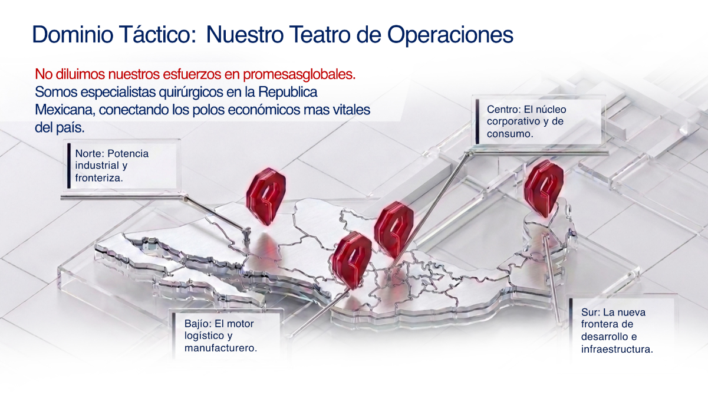
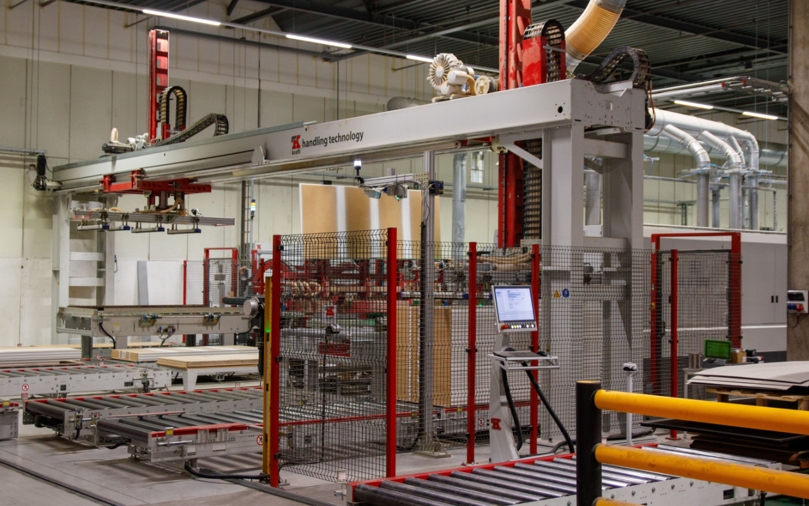
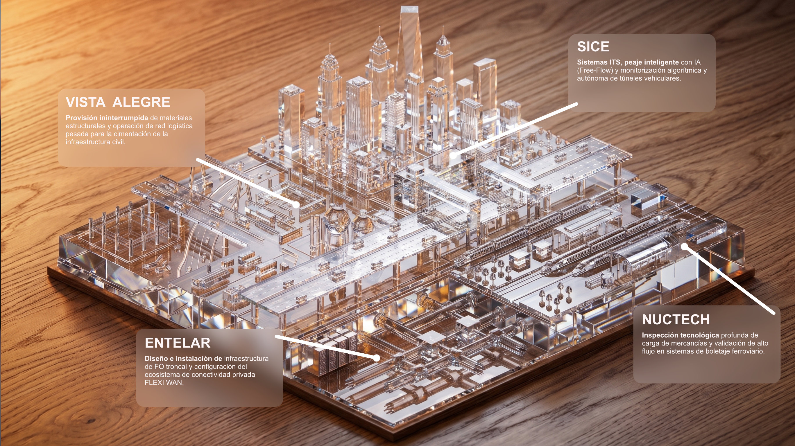

4ward Solutions
Haz scroll para continuar

Ecosistema de Crecimiento
Representación Comercial
Se enfocan en encontrar el prospecto exacto, construir capital relacional a largo plazo y ejecutar operaciones.

Integración de Soluciones
Despliegan tecnología multisectorial. Dominan la movilidad, puertos, aeropuertos y automatización.
Comercialización Tech
Identifican activos con alto potencial de disrupción y estructuran estrategias ágiles para llevarlos al mercado.
Los 4 Pilares
SICE
Implementa el peaje inteligente con Inteligencia Artificial, control de tráfico avanzado y monitorización de túneles en tiempo real para optimizar la movilidad.
Vista Alegre
Provee todos los materiales necesarios y gestiona la red logística pesada, asegurando suministros continuos y operaciones sin interrupciones.
NUCTECH
Gestiona la inspección de mercancías mediante escáneres de última generación y controla el alto flujo de pasajeros con máxima seguridad y precisión.
ENTELAR
Instala la infraestructura de fibra óptica de alta velocidad y redes de conectividad Flexi WAN, garantizando comunicaciones estables y robustas.
